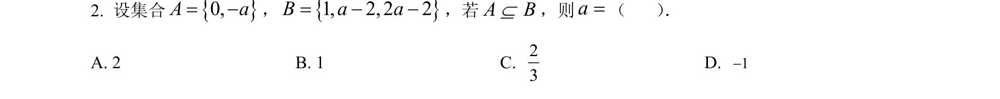
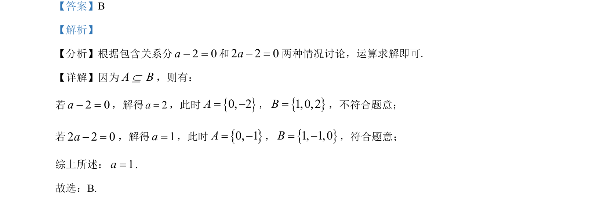

考点：集合包含关系 分类讨论 参数求解

根据集合包含关系分类讨论求参数值。

📄 原 PDF 第 1 页：
素材/真题/吉林/2008-2024·（吉林）数学高考真题/2023年高考数学试卷（新课标Ⅱ卷）（解析卷）.pdf
【答案】B 【解析】 【分析】根据包含关系分2 0a− =和2 2 0a− =两种情况讨论，运算求解即可. 【详解】因为A BÍ，则有： 若2 0a− =，解得2a=，此时{}0, 2A= −，{}1,0, 2B=，不符合题意； 若2 2 0a− =，解得1a=，此时{}0, 1A= −，{}1, 1,0B= −，符合题意； 综上所述：1a=. 故选：B.